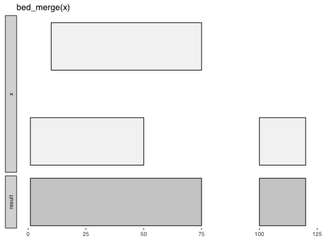

Merge overlapping intervals.
bed_merge(x, max_dist = 0, ...)
data_frame
input tbls can be grouped using dplyr::group_by prior to
analysis. It is not necessary to group by chrombecause functions do
this internally. Grouping input intervals by strand will constrain
analyses to the same strand. To compare opposing strands between two tbls,
the strand on the y tbl can first be be inverted using
flip_strands.
http://bedtools.readthedocs.org/en/latest/content/tools/merge.html
Other single-set-ops: bed_cluster,
bed_complement, bed_flank,
bed_random, bed_shift,
bed_shuffle, bed_slop
x <- tibble::tribble( ~chrom, ~start, ~end, 'chr1', 1, 50, 'chr1', 10, 75, 'chr1', 100, 120 ) bed_glyph(bed_merge(x))x <- tibble::tribble( ~chrom, ~start, ~end, ~value, ~strand, "chr1", 1, 50, 1, '+', "chr1", 100, 200, 2, '+', "chr1", 150, 250, 3, '-', "chr2", 1, 25, 4, '+', "chr2", 200, 400, 5, '-', "chr2", 400, 500, 6, '+', "chr2", 450, 550, 7, '+' ) bed_merge(x)#> # A tibble: 4 × 5 #> chrom start end value strand #> <chr> <dbl> <dbl> <chr> <chr> #> 1 chr1 1 50 . . #> 2 chr1 100 250 . . #> 3 chr2 1 25 . . #> 4 chr2 200 550 . . #>bed_merge(x, max_dist = 100)#> # A tibble: 3 × 5 #> chrom start end value strand #> <chr> <dbl> <dbl> <chr> <chr> #> 1 chr1 1 250 . . #> 2 chr2 1 25 . . #> 3 chr2 200 550 . . #># merge intervals on same strand bed_merge(dplyr::group_by(x, strand))#> Source: local data frame [6 x 5] #> Groups: strand [2] #> #> chrom start end value strand #> <chr> <dbl> <dbl> <chr> <chr> #> 1 chr1 1 50 . + #> 2 chr1 100 200 . + #> 3 chr1 150 250 . - #> 4 chr2 1 25 . + #> 5 chr2 200 400 . - #> 6 chr2 400 550 . + #>bed_merge(x, .value = sum(value))#> # A tibble: 4 × 5 #> chrom start end value strand #> <chr> <dbl> <dbl> <chr> <chr> #> 1 chr1 1 50 . . #> 2 chr1 100 250 . . #> 3 chr2 1 25 . . #> 4 chr2 200 550 . . #>